El centro de mando
de su Cuerpo de Bomberos.
Guardia, despacho, mapa, clima y carros integrados en una sola plataforma, con información en tiempo real.


Del despacho en la Central a la unidad, en segundos.
El operador despacha la emergencia desde la consola y el aviso se emite de forma simultánea a todos los equipos del Cuerpo.
- Claves de emergencia definidas por cada Cuerpo
- Alerta en cada dispositivo móvil con sonido y vibración, incluso con la aplicación cerrada
- Pantalla de despacho en la estación del cuartel y alerta en la tableta de la unidad
- Visualización de compañías con la dotación mínima en tiempo real
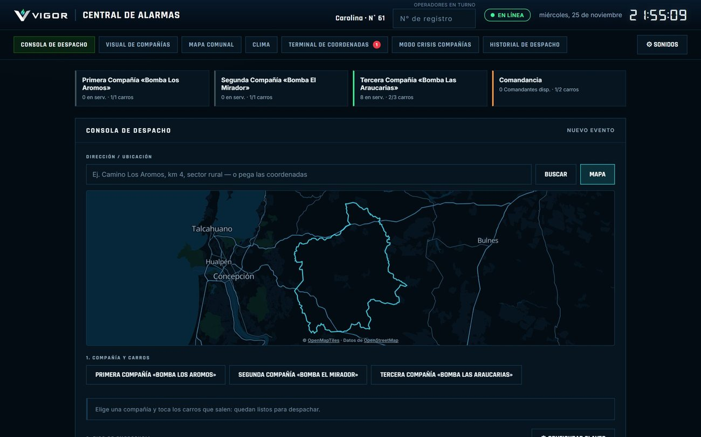
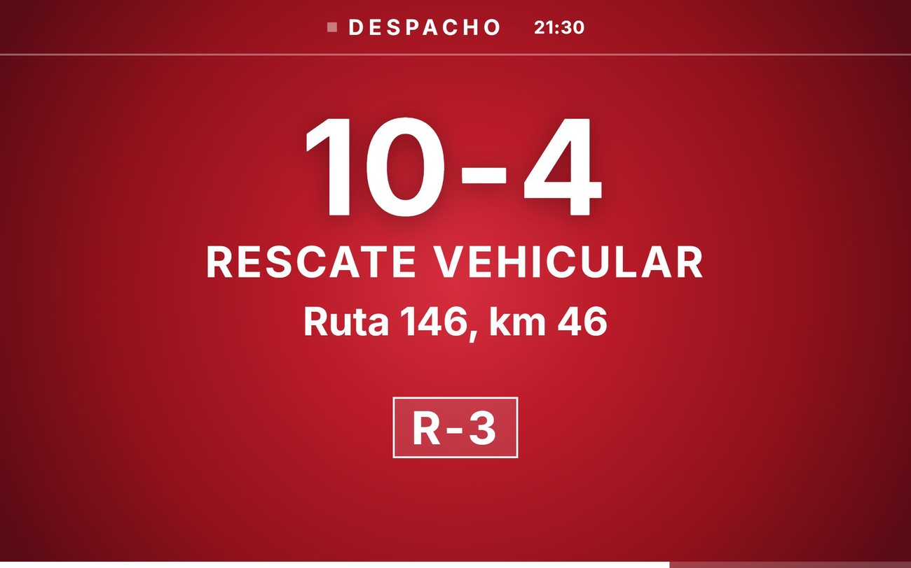
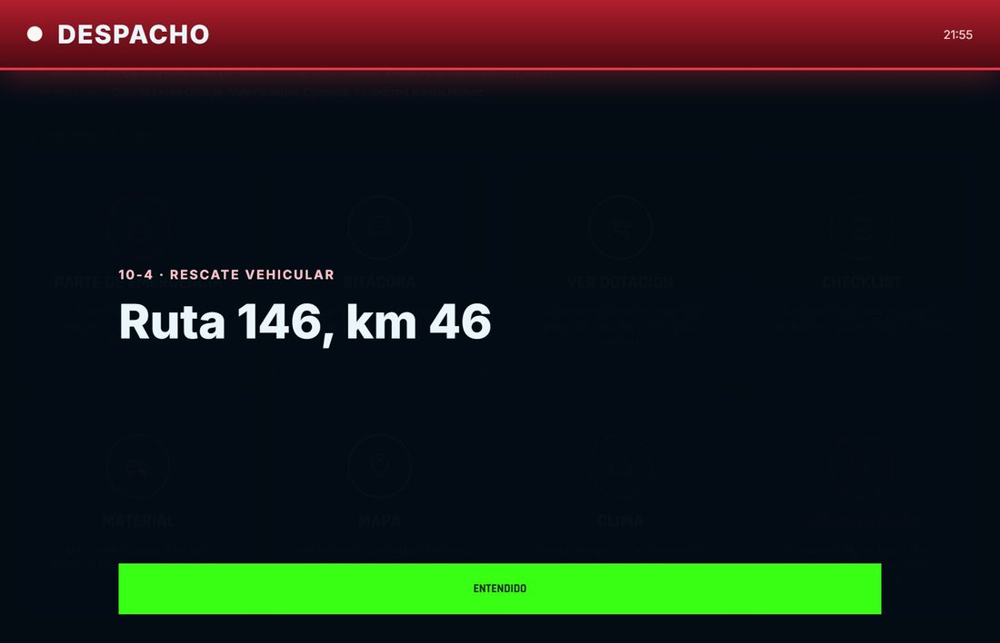
Todo el Cuerpo en un mapa en vivo.
La Central visualiza la posición de cada unidad y de los puntos relevantes de la comuna; cada carro dispone del mapa en su tableta.
- Unidades con seguimiento GPS: posición y velocidad
- Mapa comunal con el límite de la comuna
- Puntos propios del Cuerpo: cuarteles, bodegas y otros
- Ubicación del dispositivo móvil disponible para la Central
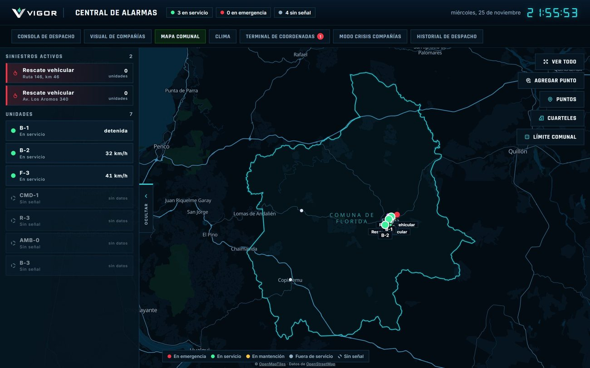
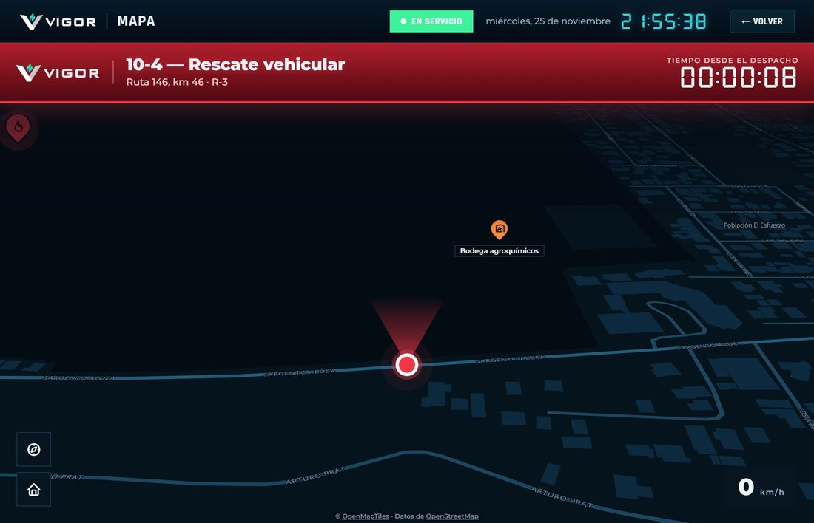
Condiciones meteorológicas en la zona de operación.
Viento, temperatura y humedad sobre el mapa, con el nivel de peligro de incendio calculado para la zona.
- Peligro de incendio según la regla 30-30-30 (temperatura, humedad y viento)
- Pronóstico con línea de tiempo de hasta 72 horas
- Corrección de la temperatura según la altura del relieve
- Disponible en la Central, la estación del cuartel y el dispositivo móvil
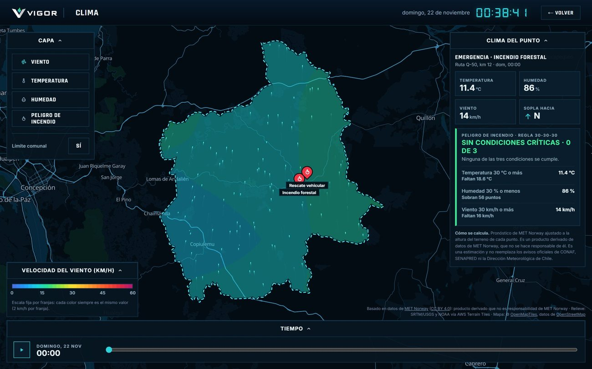
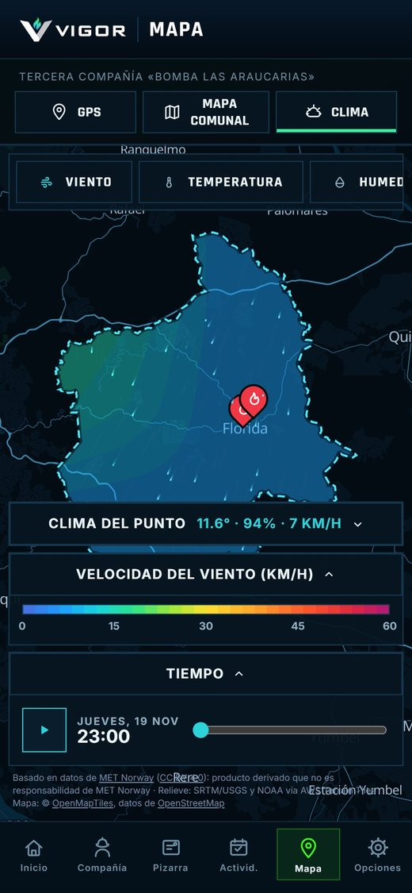
Gestión de la guardia en tiempo real.
Cada voluntario registra su estado desde el dispositivo móvil y el cuartel conoce en todo momento el personal disponible.
- Estado de servicio de cada bombero en tiempo real
- Determinación automática del mando según el cargo
- Guardia nocturna con control de cobertura y cuota
- Libro de Guardia digital con dotación calculada
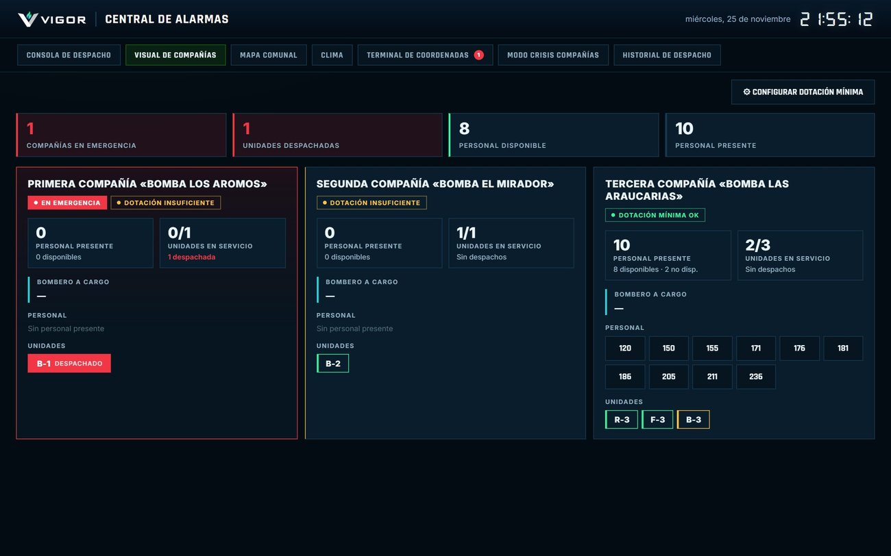
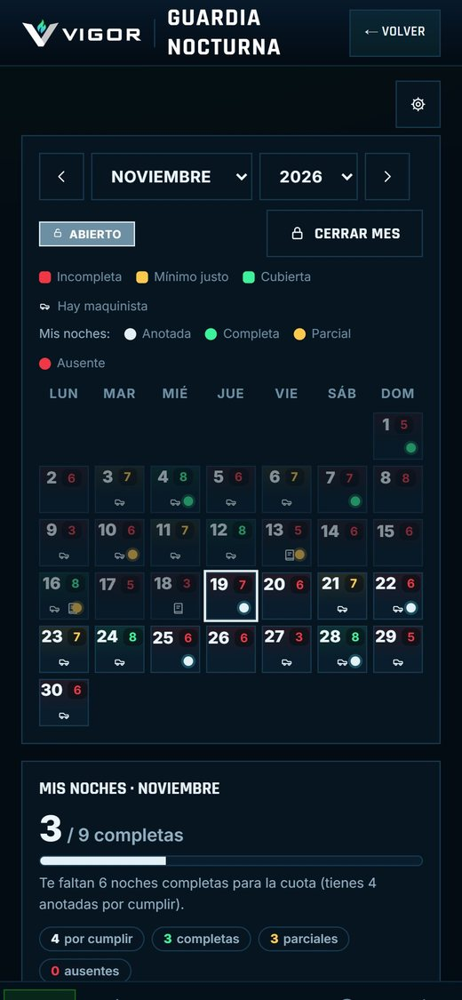
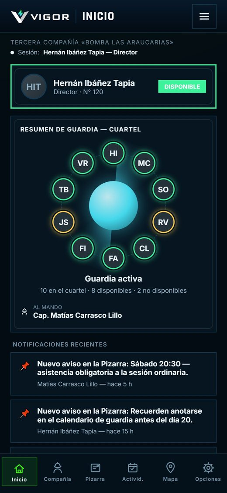
Registro operativo desde cada unidad.
Cada carro cuenta con una tableta que permite registrar su operación mientras se desarrolla, sin documentos en papel.
- Parte de emergencia completado desde la unidad
- Bitácora de salidas y checklist con historial
- Distribución de material en un camión interactivo con sus gavetas
- Exportación a PDF con formato estándar

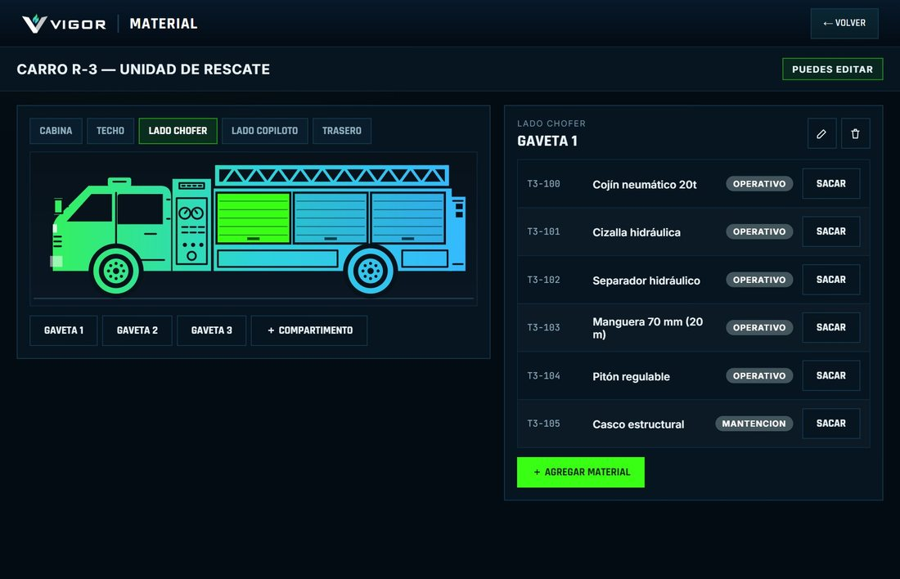
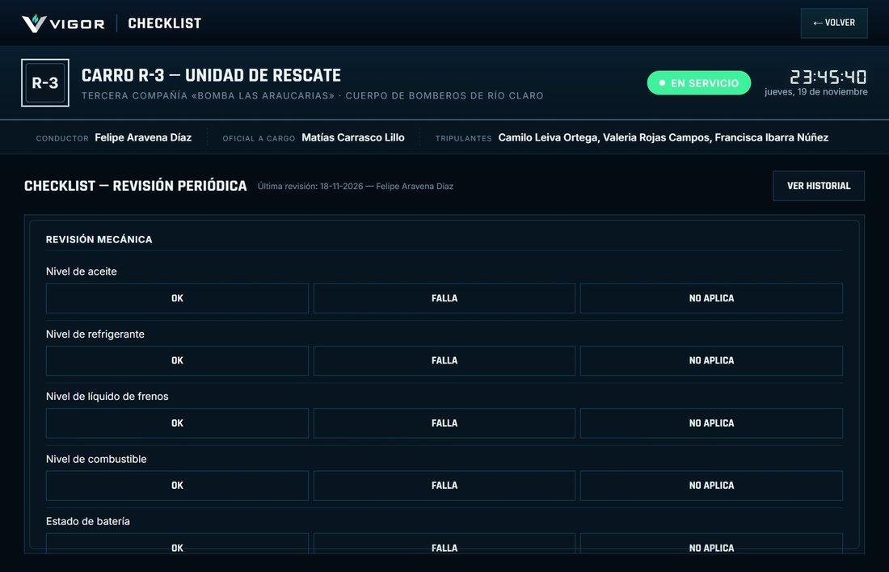
Módulos del sistema.
Vigor se compone de nueve módulos. Cada Cuerpo configura la plataforma con los que su operación requiere y puede incorporar otros a medida que crece.
Base del sistema
Hoja de vida de cada voluntario, guardia activa, guardia nocturna, Libro de Guardia, asistencia, actividades, pizarra de avisos, capacitación y especialidades.
Secretaría y tesorería
Actas, sesiones, citaciones y correspondencia; archivo institucional; control de cuotas con planilla mensual, registro de pagos y aviso al deudor.
Inventario y equipamiento
Inventario único con categorías, códigos, ubicación y fotografía; ingreso y baja de ítems con respaldo e historial de movimientos.
Despacho y operaciones
Consola de despacho de la Central, claves de emergencia, alertas en dispositivos móviles, estaciones de cuartel y tabletas de unidad, visual de compañías e historial.
Gestión de emergencias
Parte de emergencia desde la tableta de la unidad, confirmación de la dotación que salió, numeración correlativa y exportación a PDF.
Flota y mantenciones
Ficha técnica de cada unidad, bitácora de salidas, checklist periódico con historial y distribución de material por carro.
Monitoreo y disponibilidad
Mapa comunal, GPS de unidades y dispositivos móviles, clima y peligro de incendio, mapa en la tableta de la unidad y terminal de coordenadas.
Modo crisis y grandes despliegues
Modo Crisis, batallones con zona, responsable, carros y bomberos, y puestos de mando visibles para la Central y la Comandancia.
Reportes e información
Estadísticas de participación y de emergencias atendidas por compañía y por Cuerpo, con rango de fechas y exportación a PDF.
Solicite una demostración.
Presentamos Vigor con las pantallas correspondientes a cada cargo y a cada unidad del Cuerpo.